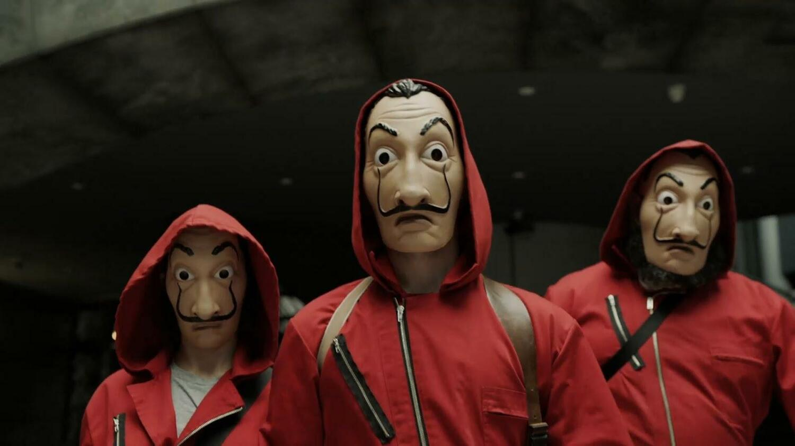
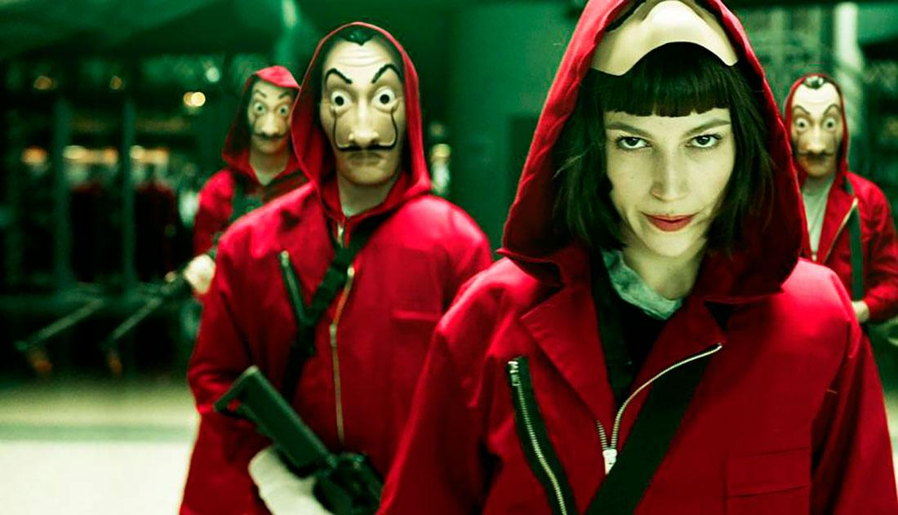
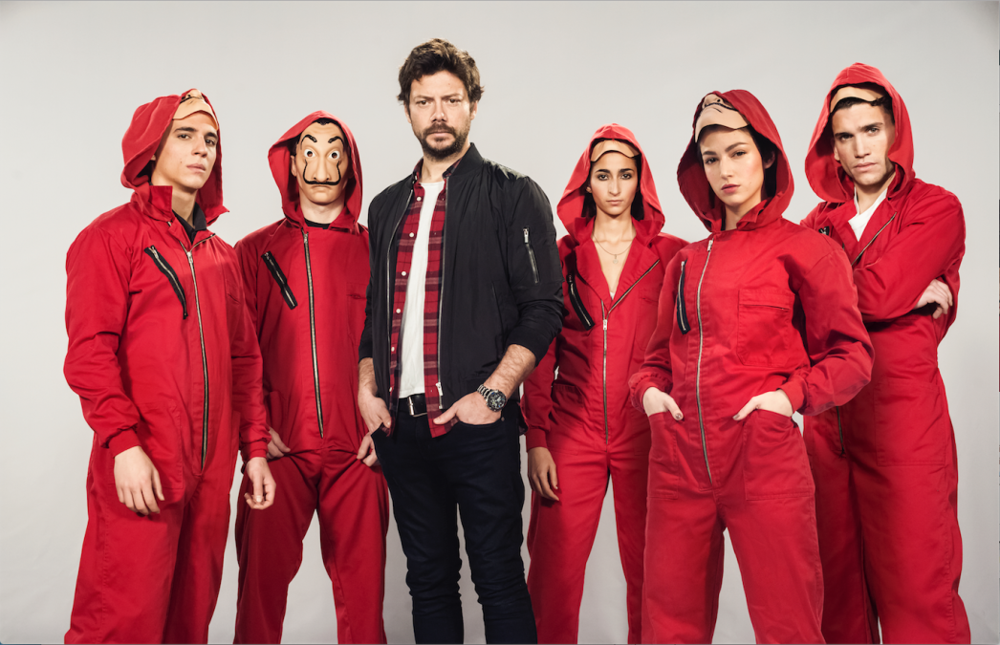
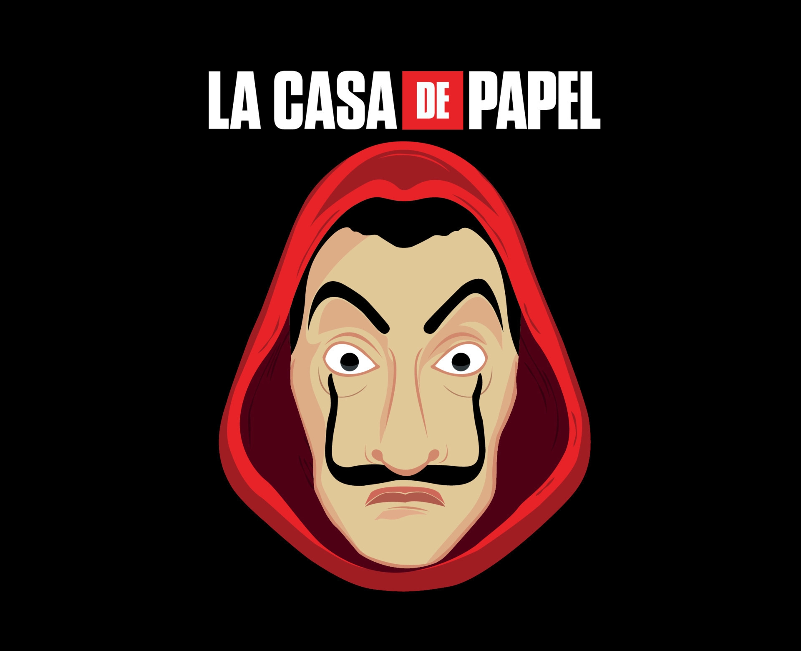

La casa de papel es una serie de televisión española creada por Álex Pina, producida por Atresmedia en sus inicios, aunque posteriormente por Netflix y con el periodista y guionista Javier Gómez Santander como coproductor ejecutivo. Protagonizada por Úrsula Corberó, Itziar Ituño y Álvaro Morte, se presentó en el III Festival de Televisión de Primavera en Burgos en marzo de 2017 y el 2 de mayo de ese mismo año se estrenó en la cadena española Antena
Esta cadena distribuyó las dos primeras partes de la serie en España antes de que Netflix la adquiriera a finales de 2017 y la editase, reeditase y distribuyese las dos partes por todo el mundo. La serie está inspirada en el protocolo del atracador de bancos Willie Sutton, que concibió más de 100 golpes mediante disfraces y engaños y sin necesidad de disparar a nadie. Eso le reportó dos millones de dólares en las décadas de 1920-1950.
La serie cuenta con 41 episodios repartidos en 5 temporadas; las dos primeras partes tratan sobre el atraco de la banda a la Fábrica Nacional de Moneda y Timbre, mientras que la tercera, cuarta y quinta parte es al Banco de España.
Los creadores consiguen combinar acción, intriga, suspenso, e incluso romanticismo y, en la
última temporada, un carácter bélico, con una gran caracterización de los personajes y un atrapante argumento.
Todas estas cualidades la convierten en la serie española más exitosa de todos los tiempos.
La casa de papel finalizó el 3 de diciembre de 2021, tras 3 temporadas y 5 partes emitidas.
Tras su final, Netflix anunció que ya trabaja en un spin-off sobre la vida de “Berlín”, interpretado por Pedro Alonso, para 2023 y en una nueva precuela llamada “El Golpe Del Siglo” para 2024

Silene Oliveira, conocida bajo el apodo de Tokio, es un personaje de La casa de papel. Es un miembro de la banda atracadora a la Fábrica Nacional de Moneda y Timbre. Está en búsqueda policial por diferentes asaltos.
Last updated 3 mins ago

Ágata Jiménez, conocida bajo el apodo de Nairobi, es un personaje de La casa de papel. Es una de las atracadoras de la Fábrica Nacional de Moneda y Timbre. Es la experta falsificadora del grupo.
Last updated 3 mins ago

Daniel Ramos, conocido bajo el apodo de Denver, es un personaje de La casa de papel. Es un miembro de la banda atracadora de la Fábrica Nacional de Moneda y Timbre. Es el hijo de Moscú..
Last updated 3 mins ago

Agustín Ramos, conocido bajo el apodo de Moscú, es un personaje de La casa de papel. Es uno de los miembros atracadores a la Fábrica Nacional de Moneda y Timbre. Es el encargado de realizar el túnel que los sacará de allí con el dinero. Es el padre de Denver.
Last updated 3 mins ago

Sergio Marquina, alias El Profesor, es un personaje de La casa de papel. Es el líder de la banda de atracadores a la Fábrica Nacional de Moneda y Timbre. Es un hombre del que poco se sabe y al que le gusta tener calculado hasta el más mínimo detalle.
Last updated 3 mins ago

Aníbal Cortés, conocido bajo el apodo de Río, es un personaje de La casa de papel. Una infancia programando y hackeando. Una adolescencia con la mirada en la Red. Esa capacidad y esos conocimientos le hicieron jefe técnico de una empresa de seguridad siendo aún muy joven. En lo personal, todo ese saber no vino acompañado de un grado de madurez equiparable. Así, pronto se vio metido en hackeos y roturas de sistemas de seguridad que poco tenían de juego. Terminó en búsqueda y captura por la Interpol, situación de la que le rescató El Profesor. Es el maestro
Last updated 3 mins ago

Andrés de Fonollosa, conocido bajo el alias de Berlín, es un personaje de La casa de papel. Es el líder de la banda que planea atracar la Fábrica Nacional de Moneda y Timbre
Last updated 3 mins ago

Mirko Dragic, conocido bajo el apodo de Helsinki, es un personaje de La casa de papel. Es un miembro de la banda atracadora de la Fábrica Nacional de Moneda y Timbre.
Last updated 3 mins ago

Mónica Gaztambide, posteriormente bautizada como Estocolmo, es un personaje de La casa de papel. Fue la secretaria del director de la Fábrica Nacional de Moneda y Timbre. Mónica Gaztambide es de esas mujeres que se fija siempre en el hombre equivocado en el peor momento posible. Tras varios fracasos en la oposiciones a funcionario de alto rango, Mónica logró aprobar el examen que le permitía ejercer como secretaria del Director de la Fábrica Nacional de Moneda y Timbre, a la sazón, Arturo, el hombre que le trae por la calle de la amargura.
Last updated 3 mins ago

Radko Dragic, conocido bajo el apodo de Oslo, es un personaje de La casa de papel. Es un miembro de la banda atracadora de la Fábrica Nacional de Moneda y Timbre.
Last updated 3 mins ago

Raquel Murillo es un personaje de La casa de papel, posteriormente bautizada como Lisboa. Fue la inspectora al cargo de resolver el atraco a la Fábrica Nacional de Moneda y Timbre.

Alicia Sierra Montes, una inspectora embarazada que pone en aprietos a la banda del profesor, que también lidera Rodrigo de la Serna.
Last updated 3 mins ago

Arturo Román es un personaje de La casa de papel. Es el director de la Fábrica Nacional de Moneda y Timbre. Se considera un buen jefe, un buen esposo, un buen padre y, sobre todo, un excelente amante. Dirige la fábrica con solvencia y siempre se muestra atento con todos sus empleados. Pero cuando el atraco comienza, el jefe no tarda en revelar su verdadera cara, la de un hombrecillo asustado y egoísta dispuesto a hacer lo que sea por sobrevivir. Muchas veces su comportamiento recuerda al de una rata intentando abandonar un barco que naufraga; otras sólo se trata de un hombre herido, hundido por la pena que siente el infiel, lleno de amor e incapaz de dejar a ninguna de sus mujeres..
Last updated 3 mins ago

Ángel Rubio es un personaje de La casa de papel. Es el subinspector durante el atraco y compañero de Raquel Murillo.
Last updated 3 mins ago
Last updated 3 mins ago
Last updated 3 mins ago
Last updated 3 mins ago
Last updated 3 mins ago
Last updated 3 mins ago